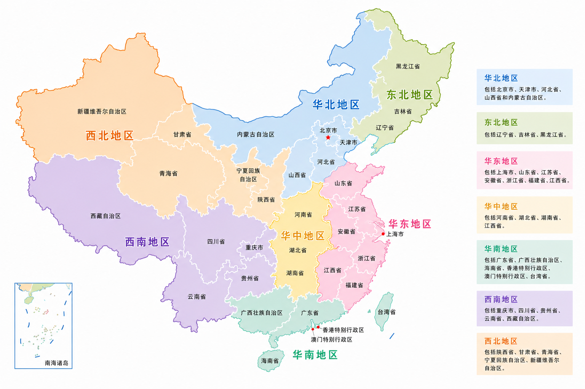

KNOWLEDGE
观象授时的千年智慧，地理分布的风物差异，尽在节气知识的纵深里。
24 SOLAR TERMS
HISTORY
早在商代，古人就已有了四时的概念。春秋战国时期，人们通过观察太阳周年运动，认知一年中时令、气候、物候等方面变化规律，逐渐形成了二十四节气体系。
2016 年，二十四节气被列入联合国教科文组织人类非物质文化遗产代表作名录。
TIMELINE
商代已有春、夏、秋、冬四时的概念，为后来节气体系的形成奠定了基础。
至迟到战国末期，已出现立春、春分、立夏、夏至、立秋、秋分、立冬、冬至八个关键节气。
《淮南子·天文训》完整记载了二十四节气名称及其顺序，体系趋于完备。
二十四节气被联合国教科文组织列入人类非物质文化遗产代表作名录。
GEOGRAPHY

点击地图分区或下方标签，查看该地区节气的气候特点与农事习俗。
MEDIA
古琴与箫合奏
自然采样与轻音乐
琵琶独奏
编钟与笛